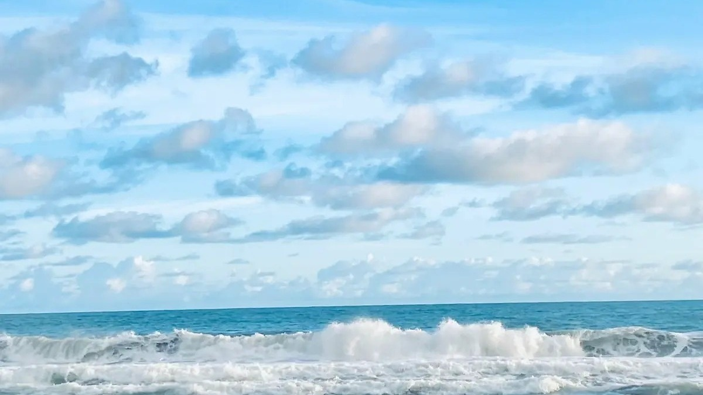
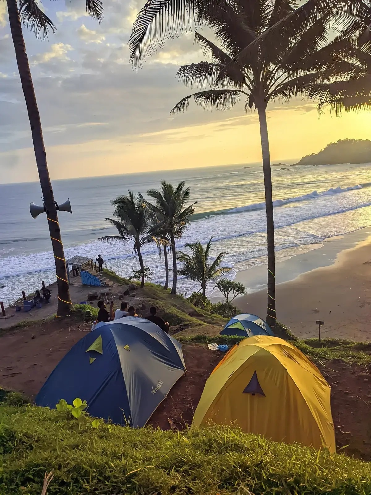
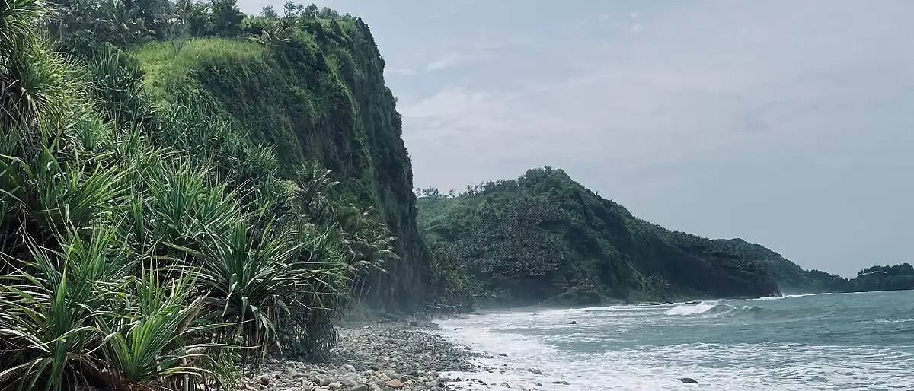

01 · TEBING & LAUT
Garis tebing, teluk kecil, dan laut selatan menjadi karakter utama lanskap Pecaron.
Kumpulan lanskap pesisir, tebing, ruang terbuka, dan momen perjalanan yang dapat ditemukan di Pecaron.



Garis tebing, teluk kecil, dan laut selatan menjadi karakter utama lanskap Pecaron.
Pagi yang lebih ringan, cahaya sore, hingga suasana bermalam memberi karakter yang berbeda sepanjang hari.
Kunjungan juga bersentuhan dengan warung, layanan, dan kehidupan warga Desa Srati di sekitar kawasan.
Foto memberi gambaran suasana; kondisi lapangan tetap perlu diperiksa sebelum berangkat.